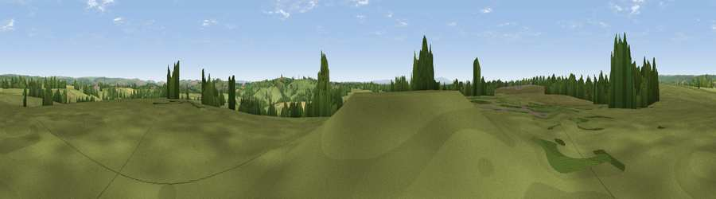

Bickham Moor
#21583 in England · top 38% of its area beats it · near RackenfordThe view, rendered

A 360° render of this exact spot computed from the terrain model, tree cover and land cover — summer colours, afternoon light, calibrated against photographs of famous viewpoints. Real trees, hedges and buildings will differ in detail.
The panorama
Grey silhouette: terrain skyline in each direction (720 bearings, Earth curvature and refraction included). Dashed green: skyline with trees (+15 m) and buildings (+8 m) as obstacles. Blue strip: how far the ground is visible on each bearing.
Where the view opens
Wedge length = distance to the farthest visible ground on that bearing (vegetation-aware). Rings at 10, 25 and 50 km.
What fills the view
81% grassland · 14% woodland · 5% cropland
Angular shares of the visible panorama (visual magnitude), not map area. Landscape diversity 0.27 (0–1 Shannon).
Key numbers
More beautiful places nearby
The staircase of upgrades: each row has a higher view potential than everything closer. Driving times are estimates from straight-line distance, calibrated against real road routing — check an actual route before setting out.
| Place | Direction | Drive | Score |
|---|---|---|---|
| Stoodleigh Beacon | SE · 3 km | ~8 min | 66.7 |
| Viewpoint near Skilgate | NE · 12 km | ~23 min | 72.5 |
| Cadbury Castle | SSE · 17 km | ~29 min | 73.7 |
| Fursdon Hill | SSE · 17 km | ~30 min | 76.2 |
| Viewpoint near Stockleigh Pomeroy | S · 18 km | ~31 min | 78.9 |
| Viewpoint near Luccombe | N · 21 km | ~35 min | 84.5 |
| Viewpoint near Luccombe | N · 22 km | ~37 min | 84.6 |
| Viewpoint near Roadwater | NE · 23 km | ~37 min | 85.2 |
50.97855, -3.61807 · source: dobih hill · position refined by local search. Computed location — check access rights before visiting.